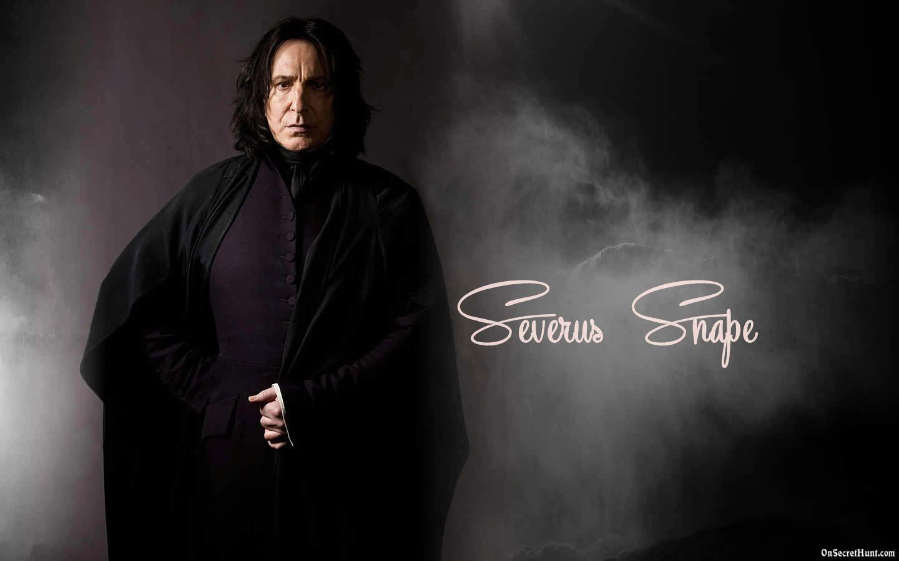

Professor Severus Snape
The man of many sacrifices

Professor Severus Snape
Here's a timeline of Professor Snape's life
- 9 Jan, 1960- Professor Snape was born
- 1971-1978- Studied at the Hogwarts School of Witchcraft and Wizardry
- 1978-1981- Joined and served Lord Voldemort as a Death Eater
- 1980- Worked as a double agent for Lord Voldemort and Albus Dumbledore on the pretense that he loved Lily Potter
- 1981- Began his teaching career at Hogwarts as potions master after being rejected multiple times for the post of defense against the dark arts teacher.
- 1984- Was appointed the head of the Slytherin House at Hogwarts
- 1991-1992- Professor Snape was responsible for safekeeping the Philosopher's Stone
- 1995- Professor Snape re-joined as a double agent for the revived Voldemort and Albus Dumbeldore
- 1997- He proves his loyalty to Dumbledore - by ending the headmaster's life as requested
- 1997- While being chased by Harry Potter for killing Dumbeldore, Professor Snape reveals to him that he himself is the Half-Blood-Prince
- 1997-1998- During the second Wizard War he was appointed the headmaster of Hogwarts
- 1998- Professor Snape fought Minerva McGonagall and began to be overwhelmed by her attacks and therefor fled the scene to seek refuge, therefore ending his term as the headmaster of Hogwarts
- 1998- During the battle of hogwarts Lord Voldemort finds out he had been working as a double agent and the Elder Wand's alligience lay with him therefore he was killed by Voldemort
- 1998- While taking his last breaths, Professor Snape revealed to Harry Potter, through his tears, that he loved his mother and had been secretly taking care of Harry while acting as a double agent and being bound by Dumbledore's promise to never reveal his true intentions. He died shortly after his heroic deeds
- 2017- Harry Potter revealed his son's name to be Albus Severus Potter in memory of two of the greatest wizards to ever exist, Albus Dumbeldore and Professor Severus Snape
"The mind is a complex and many-layered thing, Potter... or at least, most minds are..."- Professor Severus Snape
If you have time, read about this incredible wizard on his Fandom